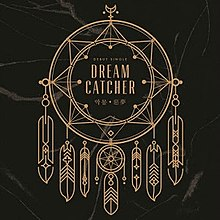
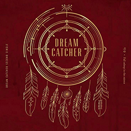
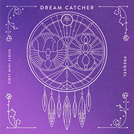
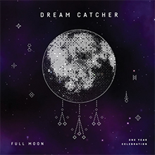
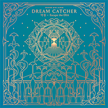
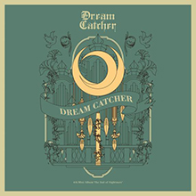

Rok 2017
Debut/1. Single Album: Nightmare
Datum vydání: 13. 2. 2017
Seznam skladeb:
- Welcome to Dream (Intro)
- Chase Me (Titulní skladba)
- Emotion (소원 하나)
- Chase Me (Inst.)
Debut stage
Music Bank - 13. 1. 2017

2. single album: Fall asleep in the mirror
Datum vydání: 5. 4. 2017
Seznam skladeb:
- My Toys (Intro)
- Good Night (Titulní skladba)
- Lullaby
- Good Night (Inst.)
Comeback stage
M! Countdown - 6. 4. 2017

1. mini album: Prequel
Datum vydání: 27. 7. 2017
Seznam skladeb:
- Before & After (Intro)
- Fly High (날아올라) (Titulní skladba)
- Wake Up
- Sleep-Walking
- It’s Okay! (괜찮아!)
- Fly High (날아올라) (Inst.)
Comeback stage
M! Countdown - 27. 7. 2017

Rok 2018
1. výroční píseň/Digital single: Full Moon
Datum vydání: 12. 1. 2018
Seznam skladeb:
- Full Moon (Titulní skladba)
- Full Moon (Inst.)
Live stage
Music Bank - 8. 6. 2018

2. mini album: Escape the ERA
Datum vydání: 10. 5. 2018
Seznam skladeb:
- Inside - Outside (Intro)
- You And I (Titulní skladba)
- Mayday
- Which a Star
- Scar
- You And I (Inst.)
Comeback stage
M! Countdown - 10. 5. 2018

3. mini album: Alone in the city
Datum vydání: 20. 9. 2018
Seznam skladeb:
- Intro
- What (Titulní skladba)
- Wonderland
- Trap
- July 7th
- What (Inst.)
Comeback stage
M! Countdown - 20. 9. 2018

1. japonský single: What (japonská ver.)
Datum vydání: 21. 11. 2018
Seznam skladeb:
- What (Titulní skladba)
- Chase Me
- I Miss You
Rok 2019
2. výroční píseň/Digital single: Over the Sky
Datum vydání: 16. 1. 2019
Seznam skladeb:
- Over the Sky (Titulní skladba)
- Over the Sky (Inst.)
Live stage
Music Bank - 8. 3. 2019

4. mini album: The end of the nightmare
Datum vydání: 13. 2. 2019
Seznam skladeb:
- Intro
- PIRI (Titulní skladba)
- Diamond
- And There Was No One Left
- Daydream
- PIRI (Inst.)
Comeback stage
M! Countdown - 14. 2. 2019
